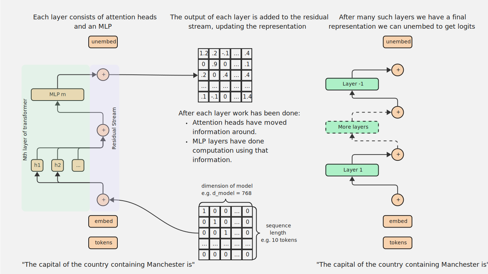
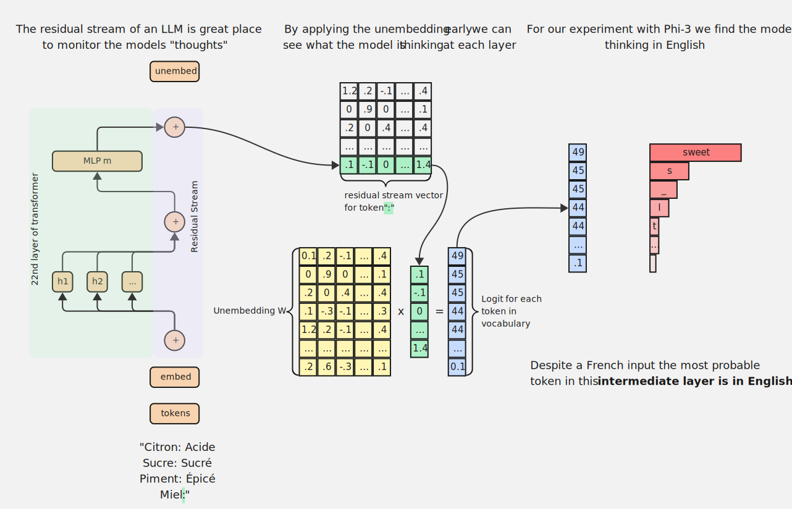
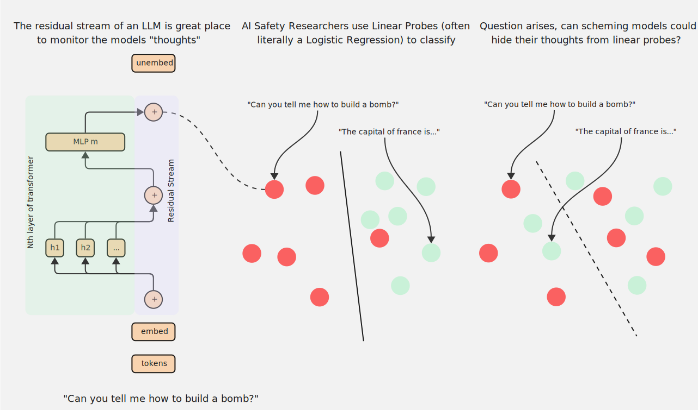
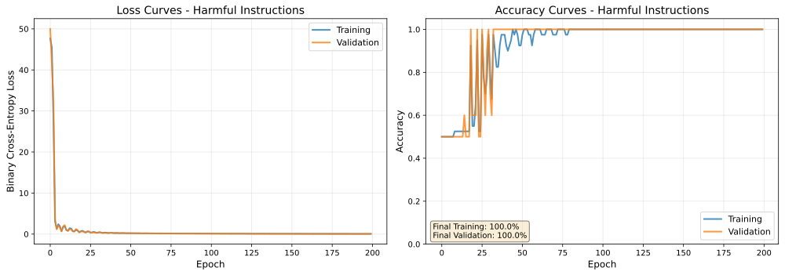

import torch.nn as nn
class LinearProbe(nn.Module):
"""Simple linear probe for binary classification."""
def __init__(self, hidden_dim):
super().__init__()
self.linear = nn.Linear(hidden_dim, 1)
self.sigmoid = nn.Sigmoid()
def forward(self, x):
logits = self.linear(x)
probs = self.sigmoid(logits)
return probsThe Residual Stream
mechanistic interpretability
residual stream
linear probes
This post discusses the residual stream in transformer models and builds towards using it for two examples of mechanistic interpretability: Logit Lens (nostalgebraist 2020) and Linear Probes (Alain and Bengio 2018).
Transformers
Much of the description of a transformer here comes straight from the excellent “A Mathematical Framework for Transformer Circuits” (Elhage et al. 2021).
The transformer is made of a few crucial components:
- Token embedding, \(W_{E}\)
- Residual Stream, \(x_{i}\)
- Attention layer, \(Attn(x_{i}) = \sum_{h \in H} h(x_{i})\)
- MLP Layer, \(MLP(x_{i})\)
- Unembedding, \(W_{U}\)
I will give a high level overview of what some of these elements do by considering the input sequence,
“The capital of the country containing Manchester is”
We consider the final token “is” as this is the token from which the model will predict the first unseen token, which we hope will be the correct answer London.
The first step is to use the Token embedding, \(W_{E} \in \mathbb{R}^{d_{model} \times d_{vocab}}\), which acts as a look-up table from the token “is”, which we represent initially by the token index \(t \in \mathbb{R}^{d_{vocab}}\), to the \(d_{model}\) vector that represents it,
\[ x_{0} = W_{E} t \tag{1}\]
This is the source of the residual stream, each process in the model adds something to this initial vector \(x_{0}\)1. The vector \(x_{0}\) starts as an isolated embedding of the token “is” but finishes as a representation capable of predicting the next token in the sequence.
1 There has been some progress towards not using the simple additive residual stream. One such example are Hyper-Connections (Zhu et al. 2025), which allow the strength of connections between layers to be learnt during training.

Most commonly a layer2 of a transformer refers to the combination of an Attention layer and an MLP layer but they add to the residual stream sequentially,
2 (Elhage et al. 2021) also refers to this as a “residual block”.
\[ x_{n+1} = x_{n} + Attn(x_{n}) + MLP(x_{n} + Attn(x_{n})) \tag{2}\]
Attention heads move information from the residual streams of other tokens in the sequence. For example in our example if we are going to answer the question,
“The capital of the country containing Manchester is”
our final representation \(x_{-1}\) is going to need to capture the multi-hop reasoning that the country containing Manchester is the United Kingdom and hence the capital is London. Clearly to answer this we need to move information from these other tokens.
The model must also know these geographical facts, research suggests that this is captured somewhere within the MLP layers (Nanda et al. 2024).
Why residuals?
There are a few reasons that this additive approach is favoured but their inclusion is likely a legacy of the Residual Neural Network (ResNet) (He et al. 2015). This paper suggested a residual stream formulation,
\[ x + f(x) \tag{3}\]
which has since also become known as a skip connection. The layers of the network return a “residual mapping” \(f(x)\) which is added to the main input. From their paper the primary motivation was to combat the degradation problem, where deeper networks have higher training and test error. This should be slightly surprising, we might expect a model with 20 layers can be replicated within a model of 50 layers - if we set the first 20 layers to match the smaller model and the remaining 30 layers to be the identity.
It turns out that for networks without a residual stream the correlation between gradients decays exponentially (Balduzzi et al. 2018), that is to say at a point \(x\) the gradient \(\nabla f(x)\) might be almost random compared to a near by point \(x + \delta\) with gradient \(\nabla f(x + \delta)\). If the gradients are almost random gradient descent is too, we set off down the slope only to immediately find it increase again. In contrast, with skip connections the correlation between gradients decays sub-linearly.
A subtly different additional benefit to using a residual stream is that we also address the vanishing gradient problem, which is where backpropagation in a deep network will involve many applications of the chain rule such that if any of the gradients are small the total update to the weights will vanish.
Following this 3Blue1Brown explainer (Sanderson 2017) we consider a very simple network with single neuron layers, connected in sequence. Let’s say every layer consists of,
\[ f(x_{i}) = \sigma(W x_{i} + b) \tag{4}\]
The sigmoid function3, \(\sigma\), is defined as,
3 ReLU and GELU activation functions are designed to also address the vanishing gradient problem.
\[ \sigma(z) = \frac{e^z}{1+e^z} \tag{5}\]
Its derivative, \(\sigma'(z) = \sigma(z)(1 - \sigma(z))\), is bounded within the interval \((0, 0.25]\). Hence, when we calculate the gradient of the loss, \(\nabla \mathcal{L}\), in backpropagation this term will reduce the resulting value by at least a factor of 4 each layer. As we update the weights according to \(-\eta \nabla \mathcal{L}\) when the gradient vanishes we stop learning.
With a residual stream there will always be a non-zero gradient,
\[ x_{i+1} = x_{i} + f(x_{i}) \tag{6}\]
\[ \frac{\partial(x_{i+1})}{\partial x_{i}} = 1 + f'(x_{i}) \tag{7}\]
The constant term \(1\) means even with repeated applications of the chain rule it is always possible to trace through the network and update the weights of earlier layers.
The Residual Stream in Mechanistic Interpretability
With this consistent \(d_{model}\) dimension vector flowing through the model we have an obvious place to inspect the model’s thoughts. As each layer refines the representation of the “is” token in preparation for predicting the next we can explore two ways to interpret this process:
- Logit Lens (nostalgebraist 2020)
- Linear Probes (Alain and Bengio 2018)
In the rest of this post I have some experiments that use these techniques to illustrate their value.
Logit Lens
The idea beyhind Logit Lens is simple, after the final layer, \(x_{-1}\), of the transformer we apply an unembedding to get logits,
\[ T(t) = W_{U} x_{-1} \tag{8}\]
which allow us to predict words. For our input sequence Phi-3 returned:
Londonwith 76% probabilityWestwith 5% probabilityBwith 4% probability- …
We can however apply the unembedding to intermediate vectors in the residual stream, getting a crude understanding of what the model is thinking at that point. This allows us to see the most probably token next token for each token in the sequence and for each layer in the model.

A great example of using a Logit Lens is the paper “Do Llamas Work in English? On the Latent Language of Multilingual Transformers” (Wendler et al. 2024). Which gave models a translation task and applied Logit Lens to see if the model thought in the prompt language or English.
I have replicated this experiment using Phi-3 and a simple prompt where we expect the model to spot the pattern in French and return the correct flavour associated with the food,
“Citron: Acide
Sucre: Sucré
Piment: Épicé
Miel:”
For this prompt we would expect a response Doux telling us that Miel (Honey) has a Sweet/Mild flavour. We run inference with the prompt and save the hidden states. Then we apply \(W_{U}\) and a softmax4 and find the token with the highest probability for each layer.
4 The softmax function is \(\sigma(z_{i}) = \frac{e^{z_{i}}}{\sum e^{z_{j}}}\)

In the plot above we can see a successful replication of (Wendler et al. 2024). With rows representing the layers of the model and columns the tokens in the sequence. We see from layer 22 to 27 the model is thinking sweet in English and only in the last 4 layers does it pivot and prepare to output the correct French word Doux!
Linear Probes
Linear probes approach the interpretability problem in a different way. Imagine we have two classes of inputs, the linear probe is a classifier trained on the residual stream vectors that learns to distinguish these classes. Examples might include:
- Proper punctuation vs. ALL CAPS
- Natural language vs. HTML formatting
- Harmless Instructions vs. Harmful Instructions
The first case is probably quite easy to learn: there is a simple pattern-matching problem for the model to spot between "Hello, can I help you?" and "HELLO, CAN I HELP YOU?". Likewise, the second is hopefully quite easy but perhaps requires some more thinking: "The main header of the page says Hello." looks very different to "<h1 class='main-header'> Hello </h1>".
Examples of harmless and harmful text are more tricky to separate, requiring genuine semantic understanding. For example, "There is a bug in your code, so you should **refactor the function.**" is quite harmless whereas "There is a bug in your code, so you should **disable the firewall.**" could be catastrophic.

I ran three experiments across these example datasets. I used the simplest Linear Probe a logistic regression classifier. For a concept \(c\) the probe \(p_{c}\) is defined as,
\[ p_{c}= \sigma(W_{c} x + b_{c}) \tag{9}\]
which in PyTorch can be written as,
For each dataset I took just 50 pairs and trained probes on layer 16, the middle of Phi-3, for 200 epochs. We run inference through Phi-3 and save the hidden states \(x_{16}\) on which we can train a linear probes. Results for all three are on the tabs below:

After some initial fluctuations by the 50th epoch the probe is certain when an input had proper punctuation or was in ALL CAPS.
I generated the ALL CAPS dataset by hand by taking permutations subjects, verbs and things e.g. The cat jumps over the fence.

Learning to distinguish natural language and HTML is even easier, less than 25 epochs and the probe is certain!
For the natural language I used samples from an Alpaca dataset (Taori et al. 2023) and for the HTML an Alpaca HTML dataset (Bui 2023).

Separating harmless and harmful instructions is, as expected, a little harder. By the 75th epoch however the probe is again certain whether a prompt is harmful or not.
For the harmless instructions I used samples from the an Alpaca dataset (Taori et al. 2023) and for the harmful instructions an advbench (Zou et al. 2023).
Hopefully soon I will write a dedicated piece on Linear Probes, watch this space.
References
Alain, Guillaume, and Yoshua Bengio. 2018. “Understanding Intermediate Layers Using Linear Classifier Probes.” https://arxiv.org/abs/1610.01644.
Balduzzi, David, Marcus Frean, Lennox Leary, JP Lewis, Kurt Wan-Duo Ma, and Brian McWilliams. 2018. “The Shattered Gradients Problem: If Resnets Are the Answer, Then What Is the Question?” https://arxiv.org/abs/1702.08591.
Belrose, Nora, Igor Ostrovsky, Lev McKinney, Zach Furman, Logan Smith, Danny Halawi, Stella Biderman, and Jacob Steinhardt. 2023. “Eliciting Latent Predictions from Transformers with the Tuned Lens.” https://doi.org/10.48550/arXiv.2303.08112.
Bui, Anh-Tuan. 2023. “Html_alpaca.” Hugging Face Hub. https://huggingface.co/datasets/ttbui/html_alpaca; Hugging Face.
Elhage, Nelson, Neel Nanda, Catherine Olsson, Tom Henighan, Nicholas Joseph, Ben Mann, Amanda Askell, et al. 2021. “A Mathematical Framework for Transformer Circuits.” Transformer Circuits Thread. https://transformer-circuits.pub/2021/framework/index.html.
He, Kaiming, Xiangyu Zhang, Shaoqing Ren, and Jian Sun. 2015. “Deep Residual Learning for Image Recognition.” CoRR abs/1512.03385. https://arxiv.org/abs/1512.03385.
Nanda, Neel, Senthooran Rajamanoharan, János Kramár, and Rohin Shah. 2024. “Fact Finding: Attempting to Reverse Engineer Factual Recall in LLMs.” August 2024. https://www.alignmentforum.org/posts/iGuwZTHWb6DFY3sKB/fact-finding-attempting-to-reverse-engineer-factual-recall.
nostalgebraist. 2020. “Interpreting GPT: The Logit Lens.” https://www.lesswrong.com/posts/AcKRB8wDpdaN6v6ru/interpreting-gpt-the-logit-lens.
Sanderson, Grant. 2017. “Backpropagation Calculus | Deep Learning Chapter 4.” https://www.3blue1brown.com/lessons/backpropagation-calculus.
Taori, Rohan, Ishaan Gulrajani, Tianyi Zhang, Yann Dubois, Xuechen Li, Carlos Guestrin, Percy Liang, and Tatsunori B. Hashimoto. 2023. “Alpaca: A Strong, Replicable Instruction-Following Model.” Hugging Face Hub. https://huggingface.co/datasets/tatsu-lab/alpaca; Hugging Face.
Wendler, Chris, Veniamin Veselovsky, Giovanni Monea, and Robert West. 2024. “Do Llamas Work in English? On the Latent Language of Multilingual Transformers.” https://arxiv.org/abs/2402.10588.
Zhu, Defa, Hongzhi Huang, Zihao Huang, Yutao Zeng, Yunyao Mao, Banggu Wu, Qiyang Min, and Xun Zhou. 2025. “Hyper-Connections.” https://arxiv.org/abs/2409.19606.
Zou, Andy, Zifan Wang, J. Zico Kolter, and Matt Fredrikson. 2023. “Universal and Transferable Adversarial Attacks on Aligned Language Models.” https://huggingface.co/datasets/S3IC/advbench; GitHub/Hugging Face.